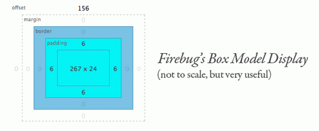

CSS Border使用小分享
---- 2010/06 乔花
css盒模型

margin+border+padding+content
- 上下左右边框交界处出呈现平滑的斜线. 利用这个特点, 通过设置不同的上下左右边框宽度或者颜色可以得到小三角, 小梯形等.
- 调整宽度大小可以调节三角形形状.
- 边框
.test2 {
border-width: 20px;
border-style: dashed dashed dashed solid;
border-color: transparent transparent transparent yellow;
width: 0px;
height: 0px;
}
- 字符
可以使用棱形字符(◆)来实现, 设置其font-size, 颜色和背景色一致, 定位可以使用margin负值和absolute绝对定位来实现
- 上梯形(无上边框,下左右3px宽度, 左右颜色去掉)+矩形+下梯形
- 自适应圆角1: 整个rc设置为float: left 或 display: inline-block 分为top,bd,bottom, top中又有两个层rc1和rc2, rc1只设置border-top, 高度为0, 并设置左右margin呈短小的一横线, rc2只设置左右border并且左右margin小于rc1, height为1px, 中间bd设置左右border,不设置左右margin;
- 不过 IE 6&7 出现 bug：rc在IE6中依然显示为dispaly:block，而IE7中top 和 bottom缩成一坨，不肯扩展开来，而在 rc1/rc2/rc3 中插入文字xxx后只能扩展到文字宽度,不能与bd对齐.
- 自适应圆角2: 自 Google 系产品的 1px 圆角按钮,,,三层div, 最外层div1正常设置边框宽度1px, 呈现出上下边框线, 中间div2只设置左右边框, 且把左右margin设置成负值, 呈现出圆角处的4个圆点 内层div3同样只设置左右边框, 同时margin上下空出div2的高度, margin左右也设置与div2相同的负值.
- css2 border
- css3 border-radius
- 透明: IE6浏览器不支持transparent透明属性，就border生成三角技术而言，直接设置对应的透明边框的border-style属性为dotted或是dashed即可解决这一问题，原因是在IE6下, 点线与虚线均以边框宽度为基准，点线长度必须是其宽度的3倍以上（height>=border-width*3），虚线宽长度必须是其宽度的5倍以上（height>=border-width*5），否则点线和虚线都不会出现。
- IE6的奇偶bug: 如果定位外框高度或是宽度为奇数，则IE6下，绝对定位元素的低定位和右定位会有1像素的误差。所以，尽量保证外框的高度或宽度为偶数值。
- IE6的空div莫名高度bug: IE6下，空div会有莫名的高度，也就是说height:0;不顶用，此时形成的尖角的实际占高于其他浏览器是有差异的。可使用font-size:0; overflow:hidden;修复此问题。
- filter: chroma滤镜, 该属性属性可以设置一个对象中指定的颜色为透明色, 如:
border-color: pink;
filter: chroma(color=pink);